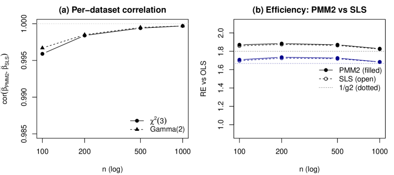
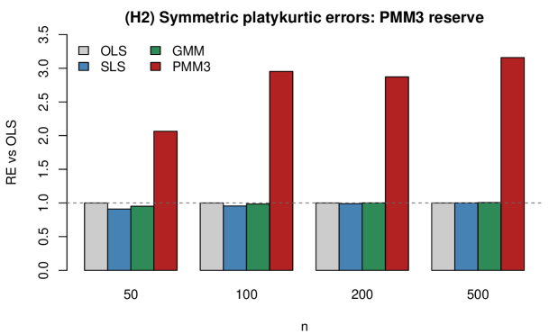

A Lean 4 development with Mathlib machine-checks the algebraic core: closed forms for g2 and g3, the g2<=1 bound, and the symmetric collapse.
Abstract
We prove that optimally weighted second-order least squares (SLS) and the degree-two generalized polynomial maximization method (PMM) are the same population estimating equation for linear regression with conditionally homoskedastic non-Gaussian errors: they choose the same optimal linear combination of the first two centered residual moments, solve one population normal system, share one influence function, and attain the common asymptotic variance $c_2g_2/N$ – the ordinary-least-squares slope-variance factor $c_2$ scaled by the PMM variance-reduction coefficient $g_2=1-γ_3^2/(2+γ_4)$ (with $γ_3,γ_4$ the error skewness and excess kurtosis). Feasible plug-in implementations are therefore first-order equivalent, with only higher-order finite-sample differences. The identity is sharp: under heteroskedasticity the unconditional PMM body and the conditional SLS weighting separate, costing efficiency for symmetric errors and consistency for asymmetric errors. Beyond degree two, PMM holds an efficiency reserve that SLS cannot reach within its second-moment span. For symmetric platykurtic errors SLS collapses to ordinary least squares for the slope, while degree-three PMM exploits kurtosis information outside the SLS moment span through a closed-form coefficient $g_3$; for canonical asymmetric laws this reserve is $30$–$50\%$ within the degree-three polynomial moment class. The Lean 4 development machine-checks the degree-specific algebraic core – the closed forms for $g_2$ and $g_3$, the $g_2\le1$ result, the design cancellations, and the symmetric collapse – while the general monotonicity $g_{S+1}\le g_S\le1$ is proved analytically by nesting. A Monte Carlo study illustrates the equivalence, the reserve, and the heteroskedastic boundary at finite samples.
Problem
Optimally weighted second-order least squares (SLS) and degree-two polynomial maximization (PMM) are both semiparametric regression estimators exploiting higher-order error moments, but the literature has treated them as separate methods. Whether they produce the same estimator, and what efficiency gains remain beyond degree two, was unresolved.
Approach
The authors prove algebraically that SLS and degree-two PMM solve identical population normal systems, share one influence function, and attain the same asymptotic variance c2*g2/N under conditionally homoskedastic non-Gaussian errors. They then show that degree-three PMM accesses moment information (e^3) outside the SLS span, yielding a 30-50% efficiency reserve on canonical asymmetric laws. The algebraic core, including closed forms for g2 and g3, the inequality g2 <= 1, design cancellations, and the symmetric collapse, is machine-checked in Lean 4.
Results
The equivalence is confirmed in Monte Carlo simulations: per-replication correlations between PMM2 and SLS slope estimates reach 0.9997 at n=1000. Under symmetric platykurtic (Uniform) errors, PMM3 attains relative efficiency up to 3.16 over OLS while SLS collapses to OLS. The identity breaks under heteroskedasticity.

Figure 1: PMM2 and SLS become empirically indistinguishable as n grows under asymmetric errors (H1). (a) Per-replication correlation \widehat{\rho}(\hat{\beta}_{1}^{\mathrm{PMM2}},\hat{\beta}_{1}^{\mathrm{SLS}}) rises toward unity in n . (b) Realized slope efficiencies of PMM2 (filled) and SLS (open) coincide across n for \chi^{2}(3) and \mathrm{Gamma}(2,1) errors; dotted lines mark the location r

Figure 2: PMM3 captures a degree-3 efficiency reserve that SLS and GMM miss under symmetric platykurtic errors (H2). On symmetric platykurtic (Uniform) errors SLS and GMM coincide with OLS ( \mathrm{RE}\approx 1 ), while PMM3 attains \mathrm{RE} up to 3.16 — a regime SLS cannot reach because the information lives in the e^{3} moment its residual vector omits.